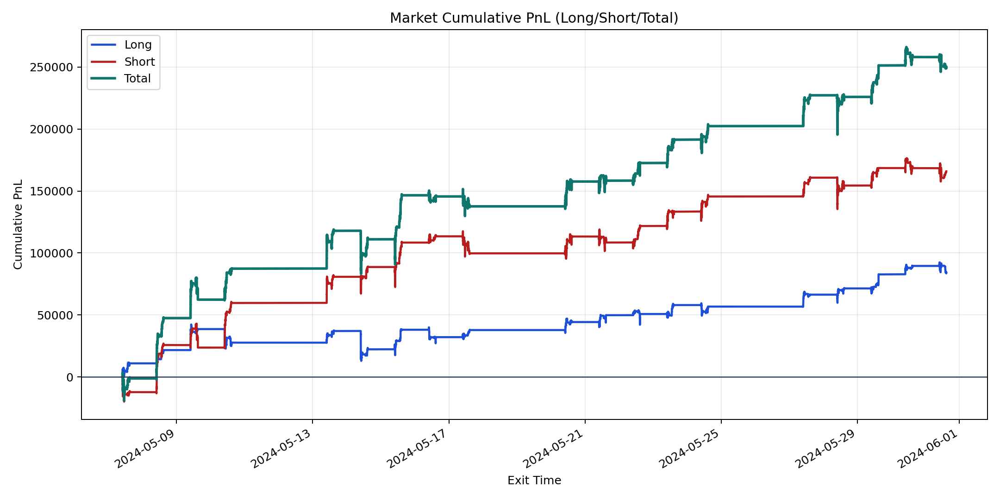
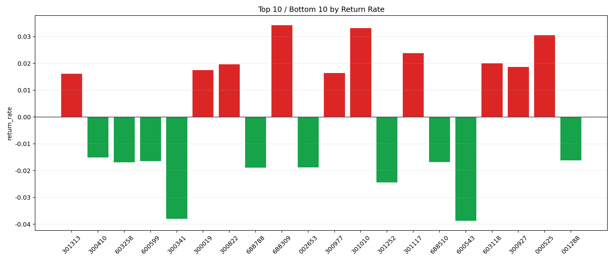

| repo_root | /home/haoranyou/data/output/alpha0.4_1w_5s_3ticks |
|---|---|
| period_months | 1 |
| period_label | 2024-05-07_to_2024-05-31 |
| start_time | 2024-05-07 09:50:12 |
| end_time | 2024-05-31 14:45:53 |
| n_trades | 53569 |
| n_symbols | 1834 |
| total_pnl | 250245.53564999986 |
| long_total_pnl | 84398.10004999986 |
| short_total_pnl | 165847.4356 |
| total_entry_notional | 496831247.0 |
| long_entry_notional | 228099146.0 |
| short_entry_notional | 268732101.0 |
| total_return_rate | 0.0005036831663890896 |
| long_return_rate | 0.000370006207958358 |
| short_return_rate | 0.0006171478397364966 |
| top_symbols_by_return | ["688309", "301010", "000525", "301117", "603118", "300822", "300927", "300019", "300977", "301313"] |
| bottom_symbols_by_return | ["600543", "300341", "301252", "688788", "002653", "603258", "688510", "600599", "001288", "300410"] |

